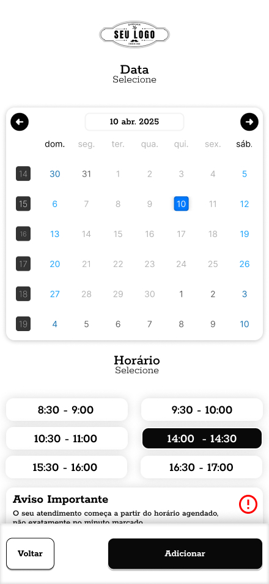
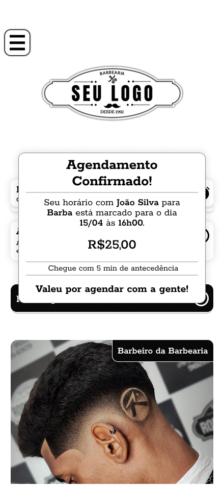
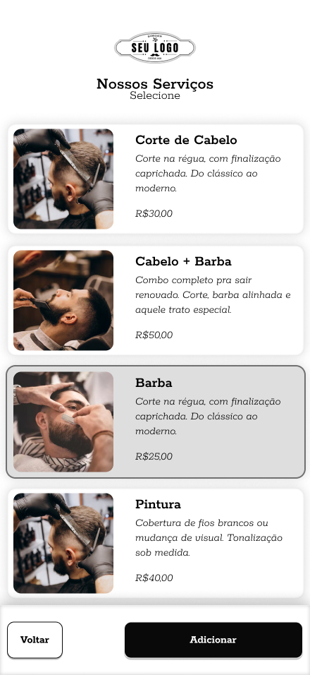

Barbearia App
Aplicativo mobile desenvolvido para simplificar o processo de agendamento em barbearias, oferecendo uma experiência rápida, intuitiva e sem fricção. O foco do projeto foi eliminar dependência de mensagens e transformar o fluxo em uma jornada digital fluida e previsível.
Problema
O processo de agendamento dependia de mensagens via WhatsApp, resultando em atrasos, falhas de comunicação e conflitos de horário.
A ausência de um sistema estruturado impactava diretamente a experiência do cliente e a organização do negócio.
Solução
Foi projetado um aplicativo mobile com foco em usabilidade, reduzindo o número de etapas e tornando o fluxo de agendamento simples, rápido e intuitivo.
- Seleção de barbeiro de forma visual e direta
- Escolha de serviços com informações claras
- Agendamento em poucos passos
- Visualização de horários disponíveis em tempo real
- Acompanhamento e histórico de atendimentos
Experiência do Usuário
O projeto foi desenvolvido com abordagem mobile first, priorizando clareza visual, navegação simples e redução de esforço cognitivo.
Cada etapa do fluxo foi pensada para evitar dúvidas, guiando o usuário de forma natural até a conclusão do agendamento.
Resultado
A solução reduz significativamente o tempo necessário para agendar um serviço, melhora a organização da agenda e proporciona uma experiência mais profissional para o cliente.
O aplicativo transforma um processo informal em uma jornada digital estruturada, aumentando eficiência e satisfação do usuário.
Interface do Aplicativo


